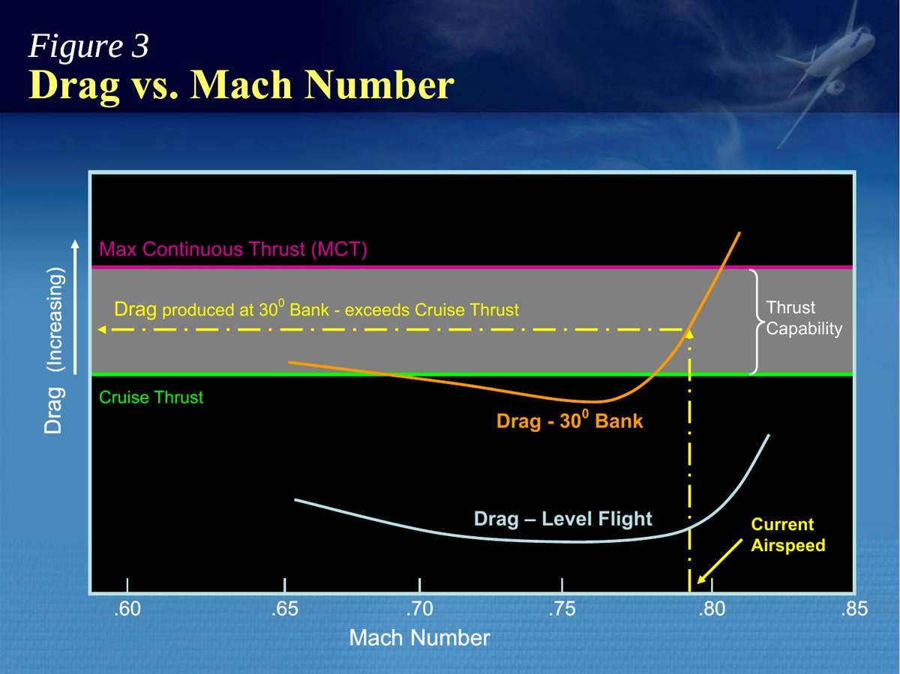
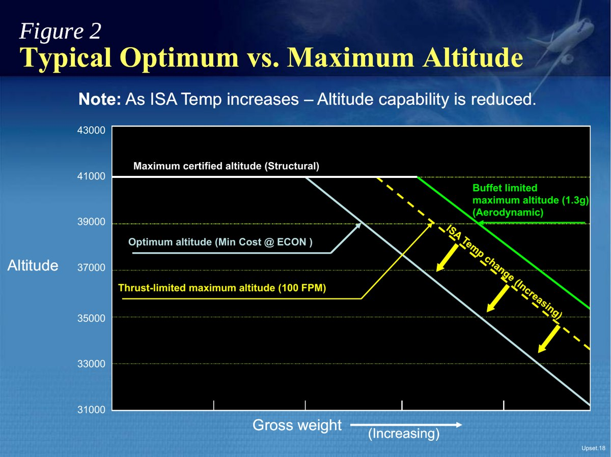
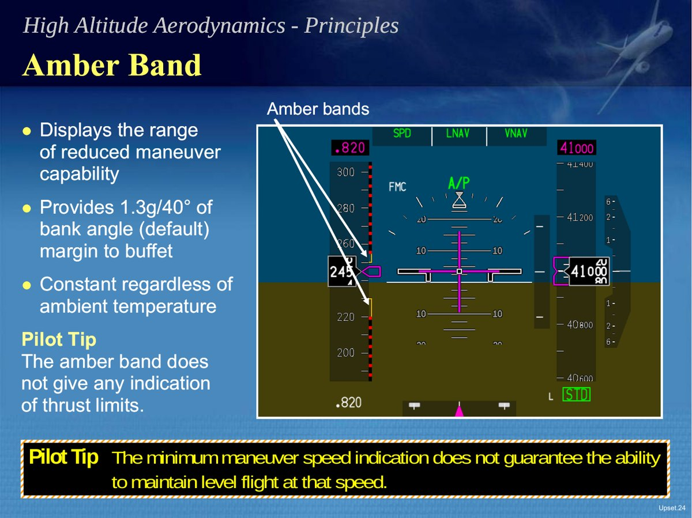
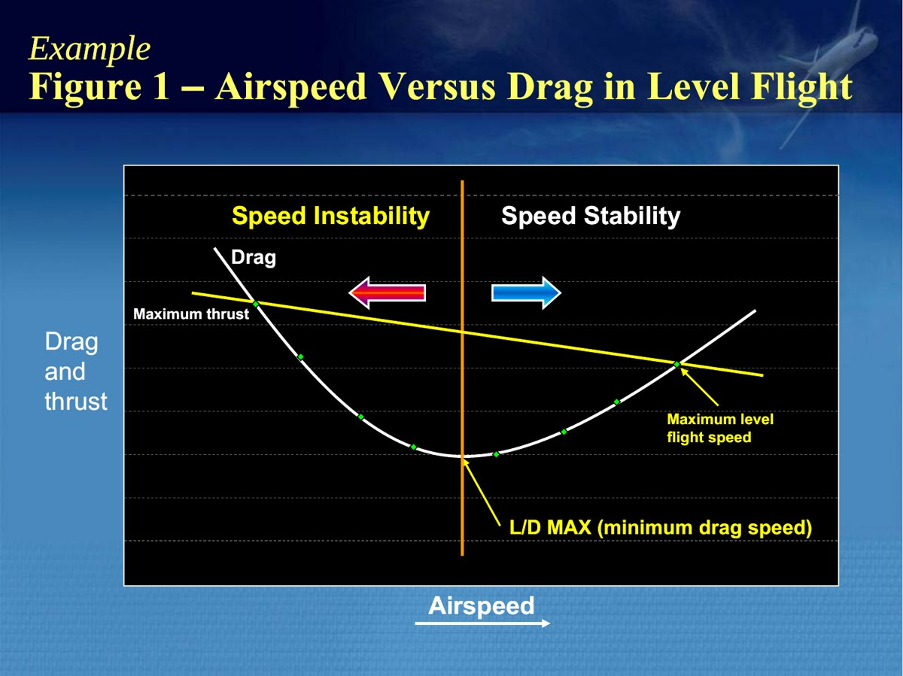

Lesson 07: High-Altitude Aerodynamics
Learning objectives
- Explain the effects of Mach number and low air density on aircraft handling at high altitude.
- Describe buffet boundaries, buffet margins and the coffin corner.
- Recognise why recovery at high altitude needs a different approach from recovery at low altitude.
At high altitude, the margins are smaller and the air is thin.
Thin air and Mach effects
At high altitude the air is thin. To produce the required lift, the aircraft flies at a high true airspeed and a relatively high angle of attack. At the same time, the speed of sound is lower in colder air, so the aircraft operates close to its critical Mach number. Two important consequences follow:
- The critical angle of attack decreases as Mach number increases. The aircraft can stall at a lower angle of attack — and a higher indicated speed — than at low altitude.
- Engines produce much less excess thrust. There is little energy available to accelerate or climb.

Buffet boundaries and the coffin corner
- Low-speed buffet is the onset of airflow separation as the stall approaches.
- High-speed (Mach) buffet is caused by shock waves and flow separation as the aircraft approaches its maximum Mach.
- As altitude and weight increase, the two boundaries come closer together. The point where they meet is often called the coffin corner.
Operators commonly plan cruise levels with a margin to buffet of at least 1.3 g — enough to absorb turbulence or a bank of about 40° without reaching buffet. The FMS "maximum altitude" usually includes such a margin. Flying above the optimum altitude reduces it.

Handling at high altitude
- Aerodynamic damping is lower: the aircraft responds more slowly and oscillations take longer to settle.
- Small pitch changes produce large vertical speeds because of the high true airspeed.
- Control inputs should be smooth and small. Large, rapid inputs can quickly exceed the buffet margin.
- Watch for temperature increases and wind shifts that suddenly reduce the Mach or speed margin.

Flight techniques at high altitude (Training Aid, Appendix 3-E)
- L/D max (minimum drag speed): below it the aircraft is on the back side of the drag curve — a speed loss increases drag and the speed keeps decaying. Above it, speed is stable.
- Crossover altitude: the altitude where a given CAS and Mach number give the same true airspeed. Above it, the speed limit is the Mach number.
- Maximum altitude is the lowest of three: the maximum certified altitude, the thrust-limited altitude (enough thrust for a minimum rate of climb) and the buffet- or manoeuvre-limited altitude (a specified margin to buffet, typically 1.3 g, about 40° of bank). Optimum altitude (best fuel economy) is lower.
- The amber band does not show thrust: holding a speed just above it does not guarantee enough thrust to stay there.
- If the speed decays and the aircraft is thrust-limited: select maximum continuous (or maximum available) thrust, reduce bank, and descend — trade altitude for energy early.
- Automation: in vertical speed or altitude-hold modes the autopilot can trade speed for altitude until the stall; at high altitude the only option may be to descend.
At high altitude a stall recovery needs a reduction of angle of attack, and altitude recovery is secondary. Thrust alone may not be enough. Pilots trained to minimise altitude loss in low-altitude approach-to-stall exercises must not apply that habit here: accept the altitude loss.

Recovery at high altitude
At high altitude, an aircraft at or near the stall cannot be "powered out" of it. The excess thrust is too small. The angle of attack must be reduced, and the aircraft must be allowed to lose altitude to regain speed and margin. Trading altitude for speed is the correct action.
Accept a significant altitude loss. Return to the cleared level only after the aircraft is under control and the speed is appropriate. Inform ATC as soon as possible.
Key takeaways
- The critical angle of attack decreases as Mach increases — high-altitude stalls occur at lower angles.
- Buffet boundaries converge with altitude and weight; keep at least the planned buffet margin.
- Damping is low and vertical speed changes are large — use small, smooth inputs.
- At high altitude, recover by reducing angle of attack and trading altitude for speed.
Knowledge check
At FL390 the aircraft approaches a stall. What is the most effective recovery action?